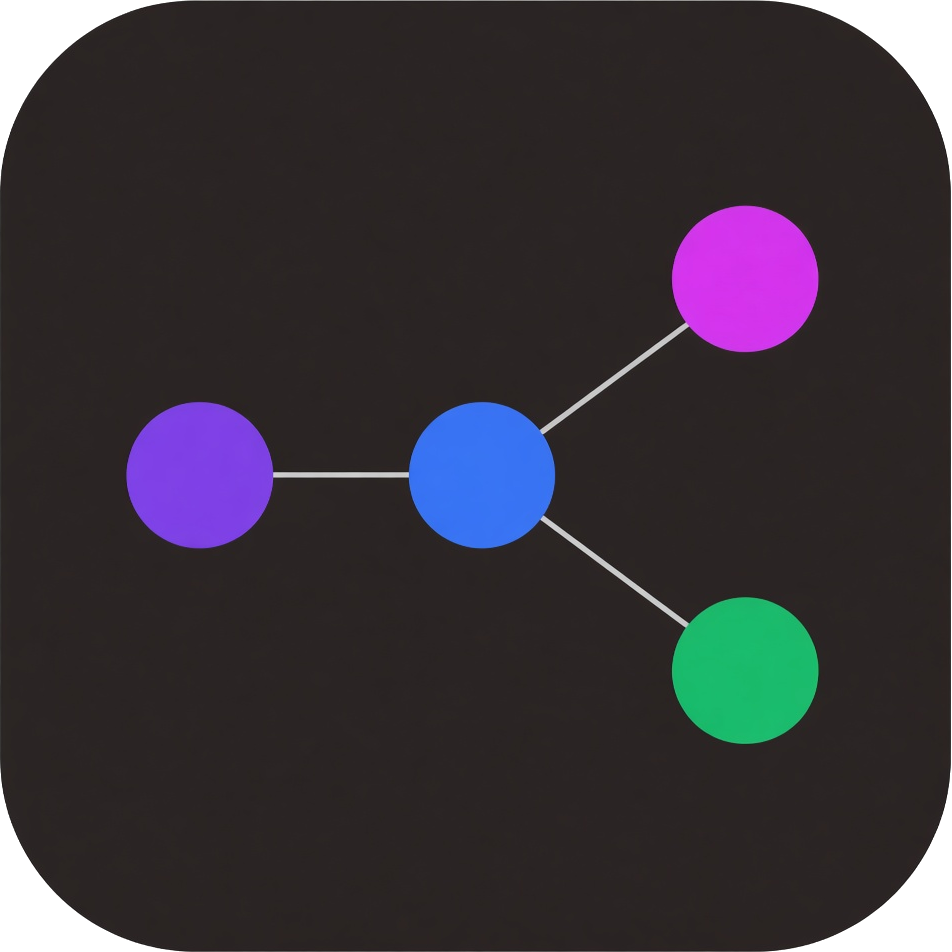
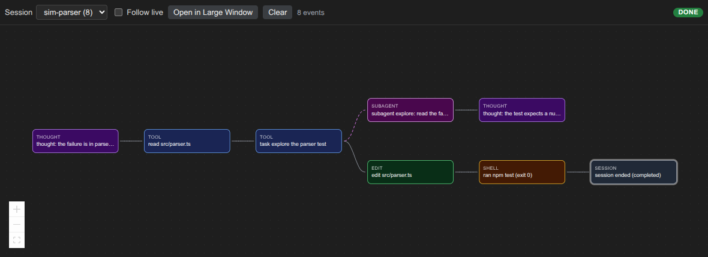

Nodes
Thoughts, tools, edits, and shell commands stay in order. Click a node to read the payload.

Agent Graph GitHubCursor and VS Code
Agent Graph draws a live graph of one Cursor agent session. Each action is a node. The badge shows the current phase.
Install on Open VSX View the source

Thoughts, tools, edits, and shell commands stay in order. Click a node to read the payload.
Subagent work branches off the parent tool. The lane returns when that work ends.
The badge shows THINKING, ACTING, OBSERVING, WAITING, DONE, or ERROR.
Install it from Open VSX. Cursor and VS Code can both run it. Hooks post events to a local server. The sidebar draws them as they arrive.
session-trace.agent-graph.Install Agent Hooks.Source: github.com/Romstar/session-trace